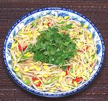

|
Soybean Sprout SaladCambodia | ||||
| Serves: Effort: Sched: DoAhead: |
4 salad ** 55 min Prep |
Adelightful appetizer or side dish salad, attractive flavors and satisfying crunch. It can be made well ahead and dressed just before serving. Once dressed it is durable enough to be a buffet salad. | |||
|
12 3 1/3 ----- 1/4 1 2 1 1 1 ----- |
oz c --- in T t T T --- |
Soybean Sprouts (1) Scallions Cilantro Leaves -- Dressing Ginger root (2) Red Chili (3) Tuk Trey (4) Palm Sugar (5) Rice Vinegar Sesame Oil, dark --------------- |
Do-Ahead - (15 min)
|